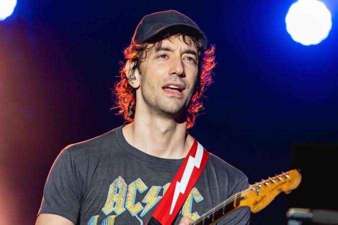

Recientemente el guitarrista y co-fundador de la banda neoyorquina The Strokes, Albert Hammond Jr. se ha visto en el ojo del huracán luego de que unas presuntas capturas de pantalla de una conversación de este ventilaron algunas conductas inapropiadas con una fanática, por lo que internet no ha evitado reaccionar. Estas imágenes evidencian a Hammond Jr. queriendo cortejar a la fan, quien además de mostrarse incómoda, le hizo saber al músico que ella no era mayor de edad, pues en esta charla le explica que tiene 17 años y lejos de comportarse a la altura de un adulto, habría seguido interactuando con la joven.

Albert Hammond Jr. (nacido el 9 de abril de 1980 en Los Ángeles, California) es un músico, compositor y productor estadounidense, mundialmente reconocido por ser el guitarrista de la aclamada banda de indie rock The Strokes. Su estilo rítmico, preciso y melódico fue fundamental para definir el sonido de la banda que revitalizó el garage rock a principios de los años 2000.